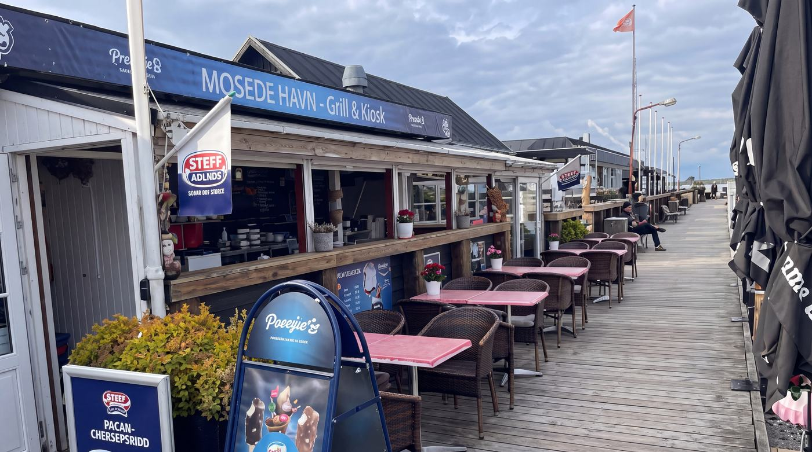
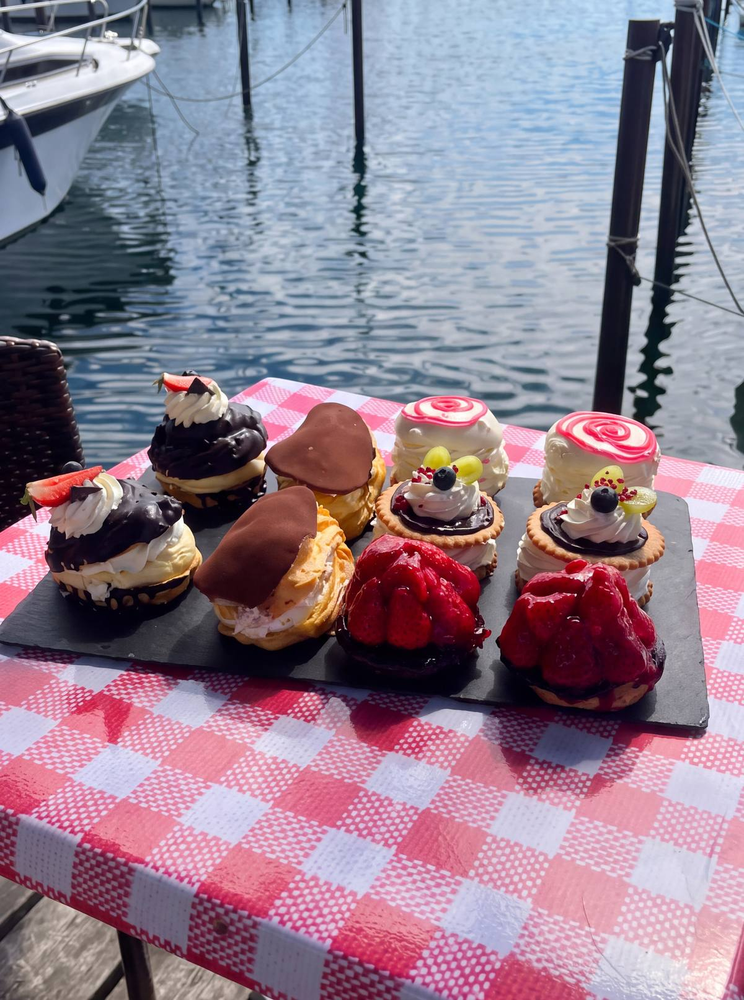

Mosede Havn · Greve
Grillmad, smørrebrød
og is direkte
ved Mosede Havn
Spis på trædækket med udsigt over vandet og bådene.
Rul ned
Solnedgang over havnen
—
Vandtemperatur
Vind i havnen
Dagens ret
Vi kan ikke få forbindelse til systemet lige nu, så tider og priser herunder
er måske ikke helt friske. Ring hvis det er vigtigt.
Går hurtigt
lige nu
Fem ting fra tavlen. Kontant, kort og MobilePay.

Kager og desserter
Spørg til
dagens udvalg
Udvalget skifter. Kom og se hvad der står i kølediskene i dag — eller tag en kop kaffe til.
Til arrangementer
Smørrebrød og platter
til store og små selskaber
Vi leverer smørrebrød og platter til alle arrangementer, store som små. Vælg det du vil have, og hvornår du henter — så ringer vi og bekræfter.
Isen
Du kommer for isen.
Du bliver for udsigten.
Kugleis, softice, ishorn, boblevafler, churros og pandekager — spist på trædækket ud til bådene.
Dagens kugler
På tavlen i dag
Find os
Åbningstider